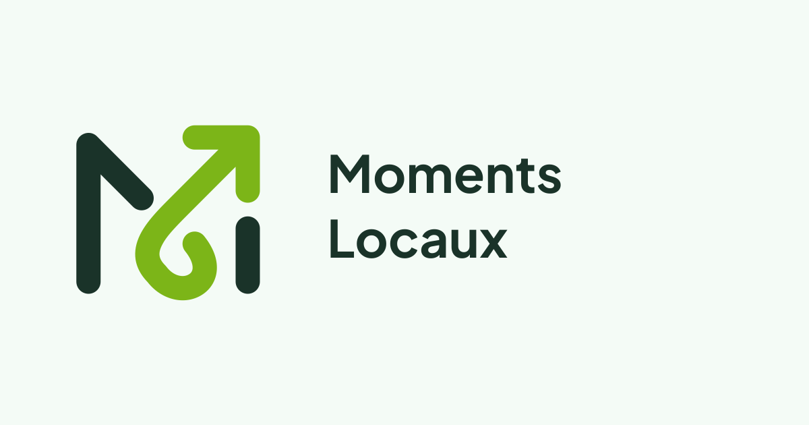

Signature en mouvement.
Le dessin B choisi : M arrondi, boucle et fleche montante. Palette encre / anis, six traitements, texte Plus Jakarta Sans converti en traces. Aucun asset actif de l’application n’a ete remplace.
Guide des fichiers · Inventaire
color
reverse
ink
white
black
leaf
Icones d’application
Partage
